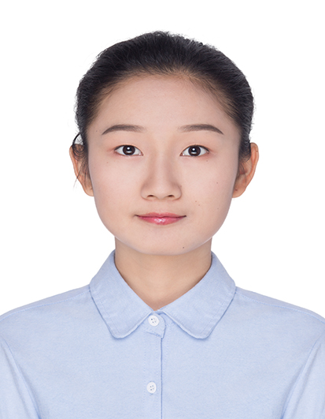
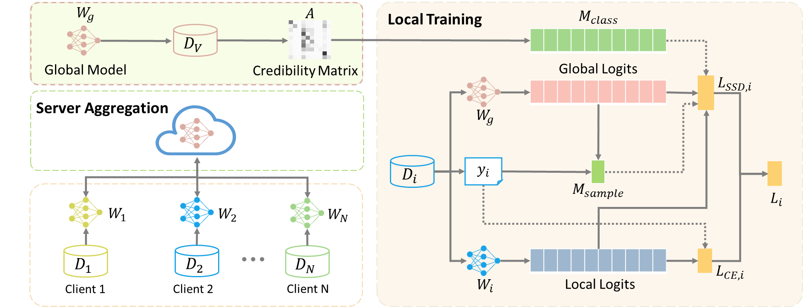
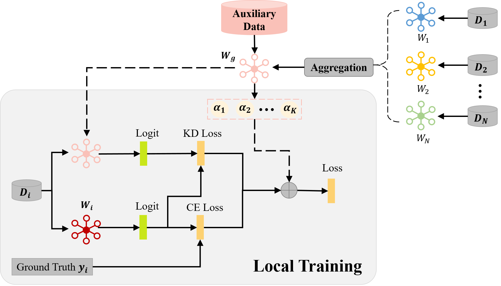
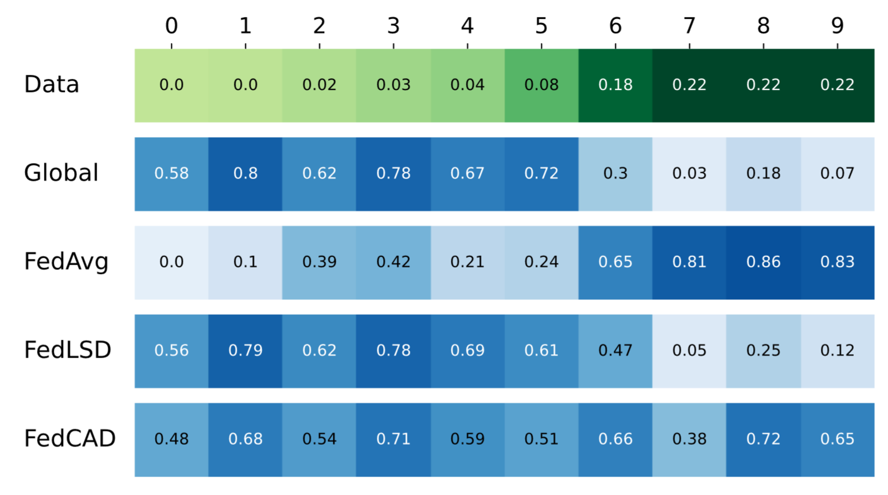

|

|
Yuting He
Master Student
Institute of Computing Technology, Chinese Academy of Sciences
University of Chinese Academy of Sciences
No.6 Kexueyuan South Road Zhongguancun, Haidian District Beijing, China
Email: heyuting20s [at] ict.ac.cn

|
Short Bio
|
I am a third-year master student at Institute of Computing Technology, Chinese Academy of Sciences, supervised by Prof. Yiqiang Chen. Previously, I received the B. E. degree from Chongqing University in 2020.
My research interest lies in Machine Learning, Federated Learning, Knowledge Distillation, Incremental Learning. Recently I focus on the Non_IID and Long-Tail problem in federated learning.
|
Awards
- China National Scholarship, 2022
- E Fund Fintech Scholarship in Institute of Computing Technology, 2021
- Merit Student in University of Chinese Academy of Sciences, 2020, 2021
- Third place in CCF BDCI Contest on Automatic Identification of Butterflies in The Wild Task, 2020
- Outstanding Undergraduates of Chongqing University, 2020
- National Encouragement Scholarship in Chongqing University, 2017
|
Publications
|

|
Learning Critically: Selective Self-Distillation in Federated Learning on Non-IID Data.
Yuting He, Yiqiang Chen, Xiaodong Yang, Hanchao Yu, Yi-Hua Huang and Yang Gu.
IEEE Transactions on Big Data (TBD), 2022.
[paper]
|
|

|
Class-Wise Adaptive Self Distillation for Heterogeneous Federated Learning.
Yuting He, Yiqiang Chen, Xiaodong Yang, Hanchao Yu, Yingwei Zhang and Bixiao Zeng.
International Workshop on Trustable, Verifiable and Auditable Federated Learning in Conjunction with AAAI (FL-AAAI), 2022.
[paper]
|
|

|
Class-Wise Adaptive Self Distillation for Federated Learning on Non-IID Data (Student Abstract).
Yuting He, Yiqiang Chen, Xiaodong Yang, Hanchao Yu, Yingwei Zhang and Bixiao Zeng.
AAAI Student Abstract and Poster Program, 2022.
[paper]
|
|